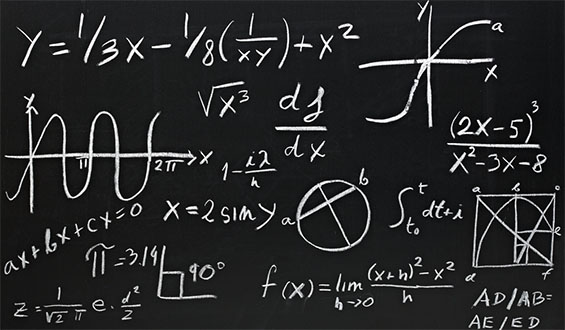

Acquiring the principles of mathematics and science
A It has been pointed out that learning mathematics and science is not so much learning facts as learning ways of thinking. It has also been emphasised that in order to learn science, people often have to change the way they think in ordinary situations. For example, in order to understand even simple concepts such as heat and temperature, ways of thinking of temperature as a measure of heat must be abandoned and a distinction between ‘temperature’ and ‘heat’ must be learned. These changes in ways of thinking are often referred to as conceptual changes. But how do conceptual changes happen? How do young people change their ways of thinking as they develop and as they learn in school?
B Traditional instruction based on telling students how modern scientists think does not seem to be very successful. Students may learn the definitions, the formulae, the terminology, and yet still maintain their previous conceptions. This difficulty has been illustrated many times, for example, when instructed students are interviewed about heat and temperature. It is often identified by teachers as a difficulty in applying the concepts learned in the classroom; students may be able to repeat a formula but fail to use the concept represented by the formula when they explain observed events.
C The psychologist Piaget suggested an interesting hypothesis relating to the process of cognitive change in children. Cognitive change was expected to result from the pupils’ own intellectual activity. When confronted with a result that challenges their thinking - that is, when faced with conflict - pupils realise that they need to think again about their own ways of solving problems, regardless of whether the problem is one in mathematics or in science. He hypothesised that conflict brings about disequilibrium, and then triggers equilibration processes that ultimately produce cognitive change. For this reason, according to Piaget and his colleagues, in order for pupils to progress in their thinking they need to be actively engaged in solving problems that will challenge their current mode of reasoning. However, Piaget also pointed out that young children do not always discard their ideas in the face of contradictory evidence. They may actually discard the evidence and keep their theory.
D Piaget’s hypothesis about how cognitive change occurs was later translated into an educational approach which is now termed ‘discovery learning’. Discovery learning initially took what is now considered the Tone learner’ route. The role of the teacher was to select situations that challenged the pupils’ reasoning; and the pupils’ peers had no real role in this process. However, it was subsequently proposed that interpersonal conflict, especially with peers, might play an important role in promoting cognitive change. This hypothesis, originally advanced by Perret-Clermont (1980) and Doise and Mugny (1984), has been investigated in many recent studies of science teaching and learning.
E Christine Howe and her colleagues, for example, have compared children’s progress in understanding several types of science concepts when they are given the opportunity to observe relevant events. In one study, Howe compared the progress of 8 to 12-year-old children in understanding what influences motion down a slope. In order to ascertain the role of conflict in group work, they created two kinds of groups according to a pre-test: one in which the children had dissimilar views, and a second in which the children had similar views.
They found support for the idea that children in the groups with dissimilar views progressed more after their training sessions than those who had been placed in groups with similar views. However, they found no evidence to support the idea that the children worked out their new conceptions during their group discussions, because progress was not actually observed in a post-test immediately after the sessions of group work, but rather in a second test given around four weeks after the group work.
F In another study, Howe set out to investigate whether the progress obtained through pair work could be a function of the exchange of ideas. They investigated the progress made by 12-15-year-old pupils in understanding the path of falling objects, a topic that usually involves conceptual difficulties. In order to create pairs of pupils with varying levels of dissimilarity in their initial conceptions, the pupils’ predictions and explanations of the path of falling objects were assessed before they were engaged in pair work. The work sessions involved solving computer-presented problems, again about predicting and explaining the paths of falling objects. A post-test, given to individuals, assessed the progress made by pupils in their conceptions of what influenced the path of falling objects.
Questions 1-6
Reading Passage 2 has SIX paragraphs, A-F.
Choose the correct heading for paragraphs A-F from the list of headings below.
Write the correct number, i-ix.
List of Headings
i A suggested modification to a theory about learning.
ii The problem of superficial understanding.
iii The relationship between scientific understanding and age.
iv The rejection of a widely held theory.
v The need to develop new concepts in daily life.
vi The claim that a perceived contradiction can assist mental development.
vii Implications for the training of science teachers.
viii An experiment to assess the benefits of exchanging views with a partner.
ix Evidence for the delayed benefits of disagreement between pupils.
1 Paragraph A
2 Paragraph B
3 Paragraph C
4 Paragraph D
5 Paragraph E
6 Paragraph F
Questions 7-8
Choose TWO letters, A-E.
The list below contains some possible statements about learning.
Which TWO of these statements are attributed to Piaget by the writer of the passage?
A Teachers can assist learning by explaining difficult concepts.
B Mental challenge is a stimulus to learning.
C Repetition and consistency of input aid cognitive development.
D Children sometimes reject evidence that conflicts with their preconceptions.
E Children can help each other make cognitive progress.
Questions 9-10
Choose TWO letters, A-E.
Which TWO of these statements describe Howe’s experiment with 8-12-year-olds?
A The children were assessed on their ability to understand a scientific problem.
B All the children were working in mixed-ability groups.
C The children who were the most talkative made the least progress.
D The teacher helped the children to understand a scientific problem.
E The children were given a total of three tests, at different times.
Questions 11-13
Complete the summary below.
Choose NO MORE THAN TWO WORDS from the passage for each answer.
How children learn
Piaget proposed that learning takes place when children encounter ideas that do not correspond to their current beliefs. The application of this theory gave rise to a teaching method known as 11
At first this approach only focused on the relationship between individual pupils and their 12 .
Later, researchers such as Perret-Clermont became interested in the role that interaction with 13 might also play in a pupil’s development..
---End of the Test---
Please Submit to view your score, solution and explanations.